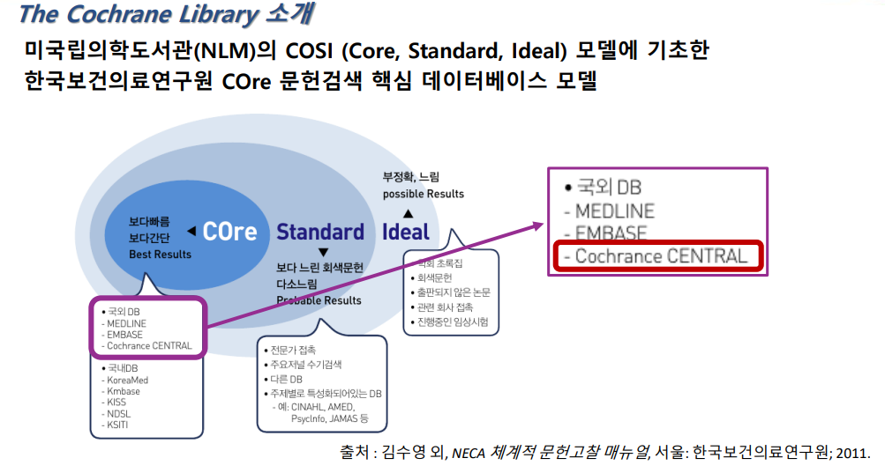
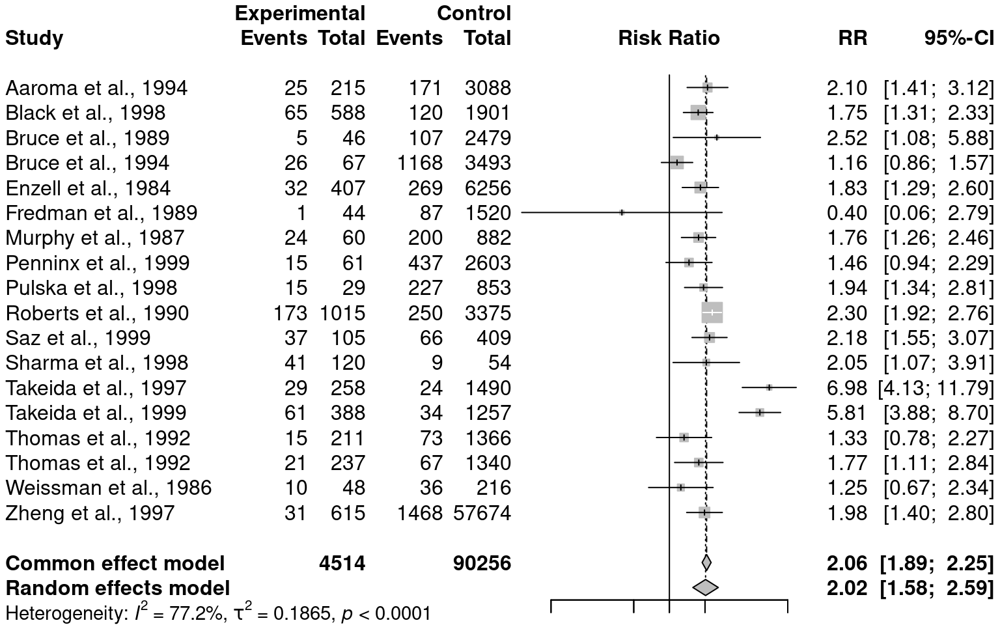
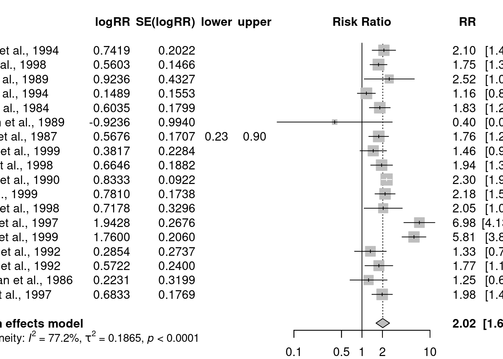
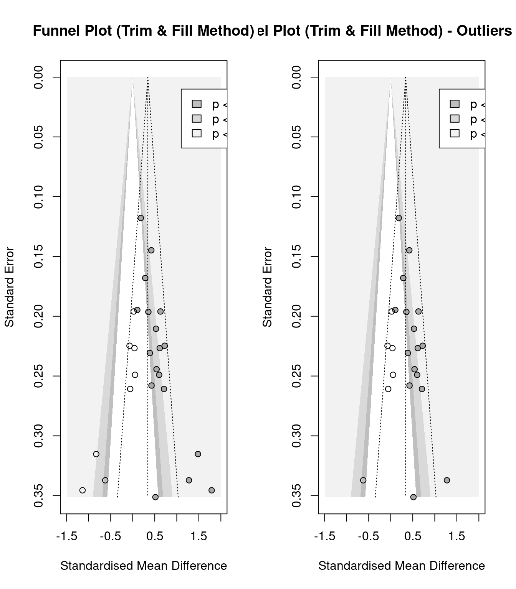
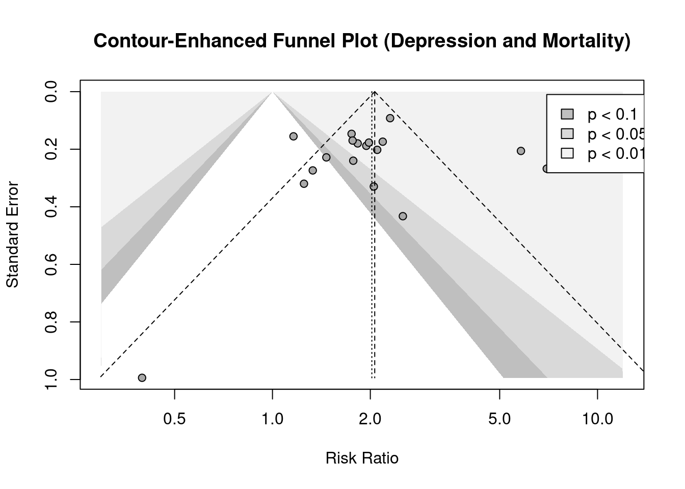
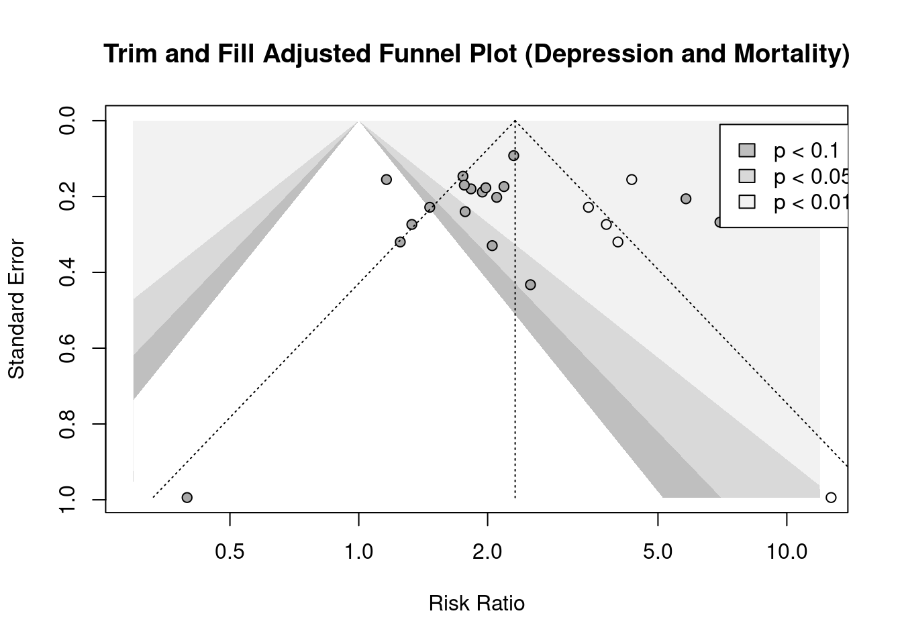

if(!require(devtools)) install.packages("devtools")
if(!require(tidyverse)) install.packages("tidyverse")
if(!require(meta)) install.packages("meta")
if(!require(dmetar)) devtools::install_github("MathiasHarrer/dmetar")
if(!require(esc)) install.packages("esc")
if(!require(htmlTable)) install.packages("htmlTable")2 메타분석
참고자료: R에서 메타 분석 수행하기
https://bookdown.org/MathiasHarrer/Doing_Meta_Analysis_in_R
2.1 메타 분석의 이해
2.1.1 메타분석이란 무엇인가?
- 정의: 메타분석은 “분석의 분석”으로, 개별 연구를 단위로 삼아 모든 관련 증거를 종합하고 해석하는 방법 (Glass, 1976).
- 목표: 특정 연구 질문에 대한 증거를 통합하여 요약하고, 정량적 결과를 하나의 수치로 추정 (예: 약물 효과, 질병 유병률 등).
- 유형 비교:
- 전통적/서술적 리뷰: 전문가가 주관적으로 연구를 선택하고 결론을 도출, 편향 가능성 있음.
- 체계적 리뷰: 투명한 규칙으로 증거를 요약, 모든 연구 포함 및 타당성 평가.
- 메타분석: 체계적 리뷰의 고급 형태로, 정량적 통합이 특징.
- 개인 참여자 데이터(IPD) 메타분석: 개별 데이터를 수집해 분석, 세부 변수 탐색 가능하나 데이터 접근 어려움으로 제한적.
2.1.2 문제 정의, 연구 검색 및 코딩
체계적 문헌 고찰의 첫 번째 단계는 연구의 핵심(초점)을 결정하는 가장 우선적이고 중요한 과정입니다 . 좋은 핵심 질문은 체계적 문헌 고찰의 전체 과정을 이끌고, 결국 양질의 연구 결과를 도출하는 데 결정적인 역할을 합니다 . 연구 질문을 설정할 때는 일반적으로 PICO(Patient, Intervention, Comparison, Outcome) 또는 필요에 따라 PICOTS(Patient, Intervention, Comparison, Outcome, Time, Setting) 프레임워크를 활용하여 질문을 구체화합니다 . 연구 질문은 기존의 증거에 의해 결정되어야 할 연구 주제에 대한 결론을 얻기 위해 명확하게 작성되어야 하며 , 그 구성 요소는 연구 디자인과 함께 일차 연구물을 선택할 때 사용될 수 있도록 더욱 정교하게 만들어져야 합니다 . 또한, 연구 질문은 조사하고자 하는 문제를 명확하게 정의하고, 그것이 구체적이고 중요한 문제인지 확인해야 합니다 . 명확하고 집중된 연구 질문을 설정하는 것은 체계적 문헌 고찰의 전체 과정을 안내하는 기본적인 단계입니다. 잘 정의된 질문은 검토의 관련성을 유지하고 특정 지식 격차를 해결하는 데 도움이 됩니다. PICO/PICOTS 프레임워크는 연구 질문의 핵심 요소를 정의하는 구조화된 접근 방식을 제공하여 모든 관련 측면을 고려하도록 보장합니다. 이 프레임워크는 후속 문헌 검색 및 연구 선택 단계에도 도움이 됩니다
- 연구 질문 정의:
- FINER 기준: 실현 가능(Feasible), 흥미로운(Interesting), 새로운(Novel), 윤리적인(Ethical), 관련성 있는(Relevant).
- PICO 프레임워크: 인구(Population), 중재(Intervention), 비교(Comparison), 결과(Outcome).
- 연구 검색:
- 출처: 리뷰, 참고문헌, 데이터베이스 (PubMed, PsycInfo 등), 회색 문헌.
- 검색 문자열: AND/OR 연산자, 와일드카드 활용 (예: “sociolog*”).
- 연구 선택:
- 3단계: 중복 제거 → 제목/초록 검토 → 전체 문헌 검토.
- 이중 검토(Double-Screening): 오류 최소화.
- 데이터 추출 및 코딩:
- 연구 특성 (저자, 연도, 표본 크기 등), 효과 크기 데이터, 연구 질/비뚤림 위험.

PICO/PICOS 구성:
| 항목 | 세부 내용 |
|---|---|
| P (Population) | 채광, 건설, 석재 가공 등 결정형 유리규산에 노출되는 직업에 종사하는 근로자 |
| I (Intervention) | 결정형 유리규산 분진에 직업적으로 노출 |
| C (Comparison) | 결정형 유리규산에 노출되지 않거나 노출 수준이 낮은 근로자 |
| O (Outcome) | 위암 발생률, 위암 사망률 |
| S (Study design) | 코호트 연구, 환자-대조군 연구 |
2.1.3 체계적인 문헌 검색 수행
문헌 검색 단계에서는 다양하고 포괄적인 자료원을 조사하여 연구 주제와 관련된 모든 연구가 누락되지 않도록 주의해야 합니다. 이를 위해 가능한 다양한 검색 엔진(PubMed, Embase, Web of Science 등)을 활용하는 것이 중요합니다 . 평가를 위한 PICO가 결정되면, 연구 질문에 대한 답을 찾기 위해 이용 가능한 모든 데이터베이스를 사전에 결정하고, 각 데이터베이스의 특성을 고려하여 검색 효율성을 높여야 합니다 . 일반적으로 MEDLINE, EMBASE, Cochrane Library와 같은 주요 데이터베이스를 검색하는 것이 권장됩니다 . 국내 연구를 포함하기 위해서는 KoreaMed, Kmbase, KISS, Riss4U, KISTI 등의 국내 전자 데이터베이스를 활용해야 하며, 검색 시 띄어쓰기 및 한글과 영어를 모두 포함하여 검색하는 것이 중요합니다 . 또한, 전자 데이터베이스 검색뿐만 아니라 수기 검색(hand searching)과 기존에 확보한 문헌들의 참고 문헌 검색을 병행하여 검색의 포괄성을 높여야 합니다 . 출판된 문헌 외에도 임상 시험 등록 데이터베이스를 검색하여 출판되지 않은 결과를 찾는 것도 중요하며 , 연구 주제에 맞는 미출판 문헌 및 회색 문헌을 적극적으로 탐색해야 합니다.
다양한 데이터베이스와 검색 방법을 활용하는 것은 검색의 포괄성을 극대화하고 출판 편향을 최소화하는 데 매우 중요합니다. 이는 표준 학술 데이터베이스뿐만 아니라 회색 문헌 및 임상 시험 등록소까지 포함합니다. 전자 데이터베이스 검색만으로는 모든 관련 연구를 포착하지 못할 수 있으므로, 수기 검색과 참고 문헌 확인을 병행하는 것이 필요합니다.
2.1.4 문헌 선정 및 배제 기준 적용
검색된 문헌 중에서 체계적 문헌 고찰에 포함할 연구와 제외할 연구를 결정하기 위해 사전에 정의된 명확한 기준을 적용해야 합니다 . 평가를 위한 구체적인 연구 질문에 대한 답을 제공하고, 편향을 제거하기 위해 연구 계획 단계에서 선택 및 배제 기준을 명확하게 명시해야 합니다 . 문헌 선택 기준은 포함 기준과 배제 기준을 모두 제시해야 하며, 연구 목적에 부합하도록 논리적으로 구성되어야 합니다 . 문헌을 선택할 때는 설정된 배제 기준 중 하나라도 해당되면 해당 문헌을 제외해야 하며, 모든 포함 기준을 만족하는 문헌만 포함해야 합니다 . 이 과정의 객관성과 투명성을 확보하기 위해 두 명 이상의 평가자가 독립적으로 문헌을 검토하고 선정해야 합니다 . 평가자들의 의견이 서로 다를 경우에는 평가자 간의 토론이나 제3자의 개입을 통해 합의를 도출해야 합니다 . 제외되는 문헌이 있을 경우, 그 이유를 명확하게 기록해야 합니다 .
명확하게 정의된 포함 및 배제 기준은 관련성이 높은 연구만을 체계적 문헌 고찰에 포함시켜 편향을 줄이고 연구 결과의 타당성을 높이는 데 필수적입니다. 연구 선택 과정에 최소 두 명의 독립적인 검토자를 참여시키는 것은 객관성을 높이고 개인적인 편향이 결과에 미치는 영향을 줄이는 데 도움이 됩니다. 의견 불일치는 토론이나 제3자의 중재를 통해 해결해야 합니다.
2.1.5 자료 추출
문헌 선정 단계를 거친 후에는 체계적 문헌 고찰에 포함된 각 연구에서 필요한 정보를 체계적으로 추출하고 코딩하는 단계가 진행됩니다 . 자료 추출 형식은 연구 목적과 평가의 틀에 부합하도록 신중하게 개발해야 합니다 . 추출하는 정보는 연구 질문과 직접적으로 관련되어야 하며, 정보의 양은 너무 상세하거나 너무 간결하지 않도록 적절해야 합니다 . 자료 추출 형식은 동일한 표본으로 여러 평가자에 의해 시범적으로 검토되어 개발되어야 합니다 . 자료 추출은 최소한 두 명의 평가자가 독립적으로 수행해야 하며, 추출된 결과는 서로 비교하여 일치 여부를 확인해야 합니다 . 자료 추출 결과에 불일치가 있을 경우, 평가자들은 토론을 통해 상호 합의를 시도해야 하며, 합의에 이르지 못할 경우에는 제3자의 개입이나 전문가의 자문을 구해야 합니다 . 일반적으로 추출되는 정보에는 연구 수행 시기, 출판 연도, 국가 또는 지역, 연구 방법, 노출 특성 및 평가 방법, 질병 정의 방식, 연구 결과 등이 포함됩니다.
체계적이고 표준화된 자료 추출 방식은 포함된 연구에서 수집된 정보의 정확성과 완전성을 보장하는 데 매우 중요합니다. 이 단계는 후속 분석 및 종합의 기초를 형성합니다. 자료 추출 형식의 내용은 연구 질문에 답하는 데 필요한 모든 관련 정보를 포착하도록 신중하게 고려해야 합니다. 여러 명의 검토자가 참여하면 정확성과 일관성을 확보할 수 있습니다.
2.1.6 문헌의 질 평가 및 삐뚤림 위험 분석
체계적 문헌 고찰에 포함된 각 연구의 방법론적 질을 평가하고 비뚤림 위험을 분석하는 것은 매우 중요한 단계입니다 . 이는 각 논문이 제공하는 정보가 객관적이고 타당한 근거를 제시하는지 확인하기 위한 과정입니다 . 모든 연구는 결과에 영향을 미칠 수 있는 편향의 가능성을 내포하고 있으므로, 문헌의 질을 평가하는 것은 필수적입니다 . 질 평가는 근거를 종합하는 데 필수적인 요소이며, 투명하고 재현 가능한 방식으로 수행되어야 합니다 . 평가 내용은 주로 연구의 방법론적 질에 초점을 맞추며, 결과값 자체의 효과 크기와는 관련이 적습니다 . 연구 설계 유형에 따라 무작위 임상 실험용 질 평가 도구와 비무작위 임상 실험용 질 평가 도구가 구분되어 사용됩니다 . 대표적인 질 평가 도구로는 Newcastle-Ottawa, ROBINS-I, ROBINS-E 등이 있습니다 . 질 평가는 주로 선택 편향, 실행 편향, 탈락 편향, 결과 확인 편향 등 4가지 주요 영역을 평가합니다 . 질 평가 결과는 체계적 문헌 고찰에서 도출된 근거의 수준을 결정하는 데 중요한 역할을 합니다 .
2.1.7 자료 분석 및 종합
선택된 문헌에서 추출한 자료를 바탕으로 연구 질문에 대한 답을 찾기 위해 자료를 분석하고 종합하는 단계입니다 . 자료 종합은 연구의 특성과 결과의 형태에 따라 정성적 또는 정량적 방법으로 수행될 수 있습니다. 정성적 종합은 통계적 방법을 사용하지 않고 관련 연구의 결과를 요약하는 방식으로 이루어집니다 . 반면, 정량적 종합은 메타분석을 통해 이루어지며, 이는 여러 개별 연구의 결과를 통계적으로 결합하여 전반적인 효과 크기를 추정하는 방법입니다 . 메타분석은 두 개 이상의 연구를 대상으로 각 연구 결과에 대한 가중 평균을 계산하는 개념입니다 . 메타분석의 주된 목적은 검정력과 정확성을 높여 개별 연구에서는 찾을 수 없었던 결론에 대한 답을 얻는 것입니다 . 자료 분석 및 종합 단계에서는 연구들 간의 이질성(heterogeneity)을 평가하고 관리하는 것이 중요합니다 . 이질성은 하위집단 분석, 메타 회귀분석, 민감도 분석 등을 통해 탐색하고 설명할 수 있습니다.
개별 연구의 결과를 종합하는 것은 체계적 문헌 고찰의 핵심입니다. 이는 포함된 연구의 성격과 연구 질문에 따라 서술적(정성적) 종합 또는 메타분석(정량적)을 포함할 수 있습니다. 메타분석은 가능한 경우 여러 연구 결과를 결합하여 통계적 검정력을 높이고 효과 크기에 대한 더 정확한 추정치를 제공합니다. 그러나 연구 간의 이질성을 평가하고 해결하는 것은 통합된 추정치의 타당성을 보장하는 데 중요합니다.
2.1.8 결과 제시 및 해석
자료 분석 및 종합 단계를 거쳐 얻은 결과를 연구의 맥락에 맞게 제시하고 해석하는 것은 체계적 문헌 고찰의 중요한 부분입니다 . 연구 결과는 일반적으로 글, 표, 그림 등의 다양한 형식을 활용하여 명확하게 제시해야 합니다 . 특히 메타분석을 수행한 경우에는 결과를 forest plot을 사용하여 시각적으로 설명하는 것이 일반적입니다 . 결과를 해석할 때는 통계적 유의성뿐만 아니라 임상적 또는 실제적인 의미를 함께 고려해야 합니다 . 또한, 개별 연구들 간에 나타나는 차이의 원인을 규명하거나 설명하는 것이 중요하며 , 근거의 양과 질, 일관성, 그리고 연구 결과의 일반화 가능성 등을 종합적으로 고려하여 최종 결론을 도출해야 합니다.
결과를 명확하고 간결하게 제시하는 것은 연구 질문과 대상 독자에게 맞게 조정되어야 합니다. 표와 그림, 특히 메타분석의 경우 forest plot과 같은 시각 자료는 결과를 효과적으로 전달하는 데 매우 유용할 수 있습니다. 결과를 해석할 때는 통계적 유의성뿐만 아니라 기존 지식과 연구 대상 집단의 특정 맥락 내에서 결과의 임상적 또는 실제적 의미를 고려해야 합니다.
2.1.9 체계적 문헌 고찰 보고서 작성
체계적 문헌 고찰의 마지막 단계는 연구 과정과 결과를 상세하게 기술하는 보고서를 작성하는 것입니다. 체계적 문헌 고찰 보고서는 일반적으로 원저 논문의 구조와 유사하게 제목, 초록, 서론, 방법론, 결과, 고찰, 참고 문헌 등으로 구성됩니다 . 보고서를 작성할 때는 PRISMA (Preferred Reporting Items for Systematic reviews and Meta-Analyses)와 같은 표준화된 보고 지침을 준수하는 것이 좋습니다 . 방법론 섹션에서는 포함/배제 기준, 연구 제시, 연구 선택 과정, 데이터 추출 방법, 질 평가 방법, 데이터 분석 방법 등을 명확하고 논리적으로 설명해야 합니다 . 결과 섹션에서는 문헌 검색 결과, 포함된 연구의 범위와 특징, 연구의 질 평가 결과, 그리고 결과에 대한 개입의 영향력 등을 상세히 기술해야 합니다 . 고찰 섹션에서는 주요 결과를 요약하고, 연구의 한계점 및 결과의 신뢰성에 대해 논의해야 합니다 . 참고 문헌 목록은 누락 없이 정확하게 작성해야 하며 , 연구 계획서(protocol)를 작성하여 보고서에 첨부하는 것도 권장됩니다.
2.1.10 요약
- 연구 질문 정의:
- FINER 기준: 실현 가능(Feasible), 흥미로운(Interesting), 새로운(Novel), 윤리적인(Ethical), 관련성 있는(Relevant).
- PICO 프레임워크: 인구(Population), 중재(Intervention), 비교(Comparison), 결과(Outcome).
- 연구 검색:
- 출처: 리뷰, 참고문헌, 데이터베이스 (PubMed, PsycInfo 등), 회색 문헌.
- 검색 문자열: AND/OR 연산자, 와일드카드 활용 (예: “sociolog*”).
- 연구 선택:
- 3단계: 중복 제거 → 제목/초록 검토 → 전체 문헌 검토.
- 이중 검토(Double-Screening): 오류 최소화.
- 데이터 추출 및 코딩:
- 연구 특성 (저자, 연도, 표본 크기 등), 효과 크기 데이터, 연구 질/비뚤림 위험.
- Cochrane Risk of Bias Tool 등으로 질 평가.
- 사전 등록: 분석 계획 공개 (OSF, PROSPERO)로 투명성 확보.
2.2 효과 크기 (Effect Sizes)
효과 크기란
- 효과 크기 는 개별 연구 결과를 표준화하여 비교 가능하게 만드는 수치입니다.
- 예: 두 집단의 평균 차이(예: 시험 점수)나 사건 발생 비율(예: 치료 성공률)을 정량화.
- 메타분석의 핵심은 연구 간 차이를 없애고 통합된 결과를 도출하는 데 있으며, 이를 위해 효과 크기가 필수적입니다.
효과 크기 선택 기준 : 효과 크기를 선택할 때는 다음 세 가지를 고려해야 합니다:
- 비교 가능성: 서로 다른 연구에서 동일한 지표로 변환 가능해야 함.
- 계산 가능성: 연구 데이터(예: 평균, 표준편차 등)로 계산할 수 있어야 함.
- 신뢰성: 통계적으로 안정적인 결과를 제공해야 함.
주요 유형
- Cohen’s d: 설명: 연속형 결과(예: 시험 점수, 키)에서 두 집단 간 평균 차이를 표준편차로 나눈 값. \[ d = \frac{M_1 - M_2}{\sqrt{\frac{SD_1^2 + SD_2^2}{2}}} \] 여기서 (M_1, M_2)는 각각 실험군과 대조군의 평균, (SD_1, SD_2)는 표준편차입니다.
\[ d \approx 0.2 \text{(작은 효과)}, \quad d \approx 0.5 \text{(중간 효과)}, \quad d \approx 0.8 \text{(큰 효과)} \]
- 오즈비(Odds Ratio, OR): 이진 결과(예: 질병 발생 여부)에서 사건 발생 확률의 비율.
\[OR = \frac{\frac{a}{b}}{\frac{c}{d}} = \frac{a \cdot d}{b \cdot c}\]
여기서 (a, b)는 실험군의 성공/실패 수, (c, d)는 대조군의 성공/실패 수. 예: 치료군과 대조군의 성공 확률 비교.
- 위험비(Risk Ratio, RR): 사건 발생 위험의 비율. OR과 비슷하지만 해석이 더 직관적.
\[RR = \frac{\frac{a}{a+b}}{\frac{c}{c+d}}\]
- 상관계수(r): 설명: 두 변수 간 관계 강도를 나타냄.
\[-1 \leq r \leq 1\] (r > 0)은 양의 상관, (r < 0)은 음의 상관, (r = 0)은 상관 없음
2.2.1 효과 크기 통합 (Pooling Effect Sizes)
통합의 필요성
- 효과 크기 통합 은 개별 연구의 결과를 하나로 합쳐 전체적인 효과를 추정합니다.
- 이를 통해 연구 간 일관성 여부와 평균 효과를 확인할 수 있습니다.
- 결국 평균을 내는데, 각 연구의 가중치를 부여한다. 입니다.
library(dmetar)
library(esc)
library(tidyverse)
data(SuicidePrevention)
SuicidePrevention %>% head() author n.e mean.e sd.e n.c mean.c sd.c pubyear age_group
1 Berry et al. 90 14.98 3.29 95 15.54 4.41 2006 gen
2 DeVries et al. 77 16.21 5.35 69 20.13 7.43 2019 older
3 Fleming et al. 30 3.01 0.87 30 3.13 1.23 2006 gen
4 Hunt & Burke 64 19.32 6.41 65 20.22 7.62 2011 gen
5 McCarthy et al. 50 4.54 2.75 50 5.61 2.66 1997 gen
6 Meijer et al. 109 15.11 4.63 111 16.46 5.39 2000 gen
control
1 WLC
2 no intervention
3 no intervention
4 WLC
5 WLC
6 no interventionSuicidePrevention은 dmetar 패키지에 포함된 예제 데이터셋으로, 자살 예방 프로그램의 효과를 평가한 연구 데이터를 담고 있습니다. 이 데이터는 보통 다음과 같은 열(column)을 포함합니다:
- mean.e: 실험군(experimental group)의 평균
- sd.e: 실험군의 표준편차
- n.e: 실험군의 표본 크기
- mean.c: 대조군(control group)의 평균
- sd.c: 대조군의 표준편차
- n.c: 대조군의 표본 크기
- author: 연구 저자 또는 연구 이름
library(dmetar)
library(esc)
library(tidyverse)
# Load data set from dmetar
data(SuicidePrevention)
# Calculate Hedges' g and the Standard Error
# - We save the study names in "study".
# - We use the pmap_dfr function to calculate the effect size
# for each row.
SP_calc <- pmap_dfr(SuicidePrevention,
function(mean.e, sd.e, n.e, mean.c,
sd.c, n.c, author, ...){
esc_mean_sd(grp1m = mean.e,
grp1sd = sd.e,
grp1n = n.e,
grp2m = mean.c,
grp2sd = sd.c,
grp2n = n.c,
study = author,
es.type = "g") %>% #d : cohen's d
as.data.frame()})
# Let us catch a glimpse of the data
# The data set contains Hedges' g ("es") and standard error ("se")
SP_calc %>% head() study es weight sample.size se var
1 Berry et al. -0.1427945 46.09784 185 0.1472854 0.02169299
2 DeVries et al. -0.6077093 34.77314 146 0.1695813 0.02875783
3 Fleming et al. -0.1111797 14.97625 60 0.2584036 0.06677240
4 Hunt & Burke -0.1269801 32.18243 129 0.1762749 0.03107286
5 McCarthy et al. -0.3924744 24.52054 100 0.2019459 0.04078214
6 Meijer et al. -0.2675788 54.50431 220 0.1354517 0.01834717
ci.lo ci.hi measure
1 -0.4314686 0.145879624 g
2 -0.9400826 -0.275335960 g
3 -0.6176413 0.395282029 g
4 -0.4724727 0.218512440 g
5 -0.7882811 0.003332195 g
6 -0.5330593 -0.002098274 gSP_calc$w <- 1/SP_calc$se^2
# Then, we use the weights to calculate the pooled effect
pooled_effect <- sum(SP_calc$w*SP_calc$es)/sum(SP_calc$w)
pooled_effect[1] -0.2311121이미 계산된 값을 가지고 할 경우
ThirdWave %>% head() Author TE seTE RiskOfBias TypeControlGroup
1 Call et al. 0.7091362 0.2608202 high WLC
2 Cavanagh et al. 0.3548641 0.1963624 low WLC
3 DanitzOrsillo 1.7911700 0.3455692 high WLC
4 de Vibe et al. 0.1824552 0.1177874 low no intervention
5 Frazier et al. 0.4218509 0.1448128 low information only
6 Frogeli et al. 0.6300000 0.1960000 low no intervention
InterventionDuration InterventionType ModeOfDelivery
1 short mindfulness group
2 short mindfulness online
3 short ACT group
4 short mindfulness group
5 short PCI online
6 short ACT groupm.gen <- metagen(TE = TE,
seTE = seTE,
studlab = Author,
data = ThirdWave,
sm = "SMD", #standard mean difference
fixed = FALSE,
random = TRUE,
method.tau = "REML",
method.random.ci = "HK",
title = "Third Wave Psychotherapies")Warning: Use argument 'common' instead of 'fixed' (deprecated).summary(m.gen)Review: Third Wave Psychotherapies
SMD 95%-CI %W(random)
Call et al. 0.7091 [ 0.1979; 1.2203] 5.0
Cavanagh et al. 0.3549 [-0.0300; 0.7397] 6.3
DanitzOrsillo 1.7912 [ 1.1139; 2.4685] 3.8
de Vibe et al. 0.1825 [-0.0484; 0.4133] 7.9
Frazier et al. 0.4219 [ 0.1380; 0.7057] 7.3
Frogeli et al. 0.6300 [ 0.2458; 1.0142] 6.3
Gallego et al. 0.7249 [ 0.2846; 1.1652] 5.7
Hazlett-Stevens & Oren 0.5287 [ 0.1162; 0.9412] 6.0
Hintz et al. 0.2840 [-0.0453; 0.6133] 6.9
Kang et al. 1.2751 [ 0.6142; 1.9360] 3.9
Kuhlmann et al. 0.1036 [-0.2781; 0.4853] 6.3
Lever Taylor et al. 0.3884 [-0.0639; 0.8407] 5.6
Phang et al. 0.5407 [ 0.0619; 1.0196] 5.3
Rasanen et al. 0.4262 [-0.0794; 0.9317] 5.1
Ratanasiripong 0.5154 [-0.1731; 1.2039] 3.7
Shapiro et al. 1.4797 [ 0.8618; 2.0977] 4.2
Song & Lindquist 0.6126 [ 0.1683; 1.0569] 5.7
Warnecke et al. 0.6000 [ 0.1120; 1.0880] 5.2
Number of studies: k = 18
SMD 95%-CI t p-value
Random effects model (HK) 0.5771 [0.3782; 0.7760] 6.12 < 0.0001
Quantifying heterogeneity (with 95%-CIs):
tau^2 = 0.0820 [0.0295; 0.3533]; tau = 0.2863 [0.1717; 0.5944]
I^2 = 62.6% [37.9%; 77.5%]; H = 1.64 [1.27; 2.11]
Test of heterogeneity:
Q d.f. p-value
45.50 17 0.0002
Details of meta-analysis methods:
- Inverse variance method
- Restricted maximum-likelihood estimator for tau^2
- Q-Profile method for confidence interval of tau^2 and tau
- Calculation of I^2 based on Q
- Hartung-Knapp adjustment for random effects model (df = 17)이분형효과에서의 합
현재 library 에서는 binary outcome 에 대한 meta-analysis 는 metabin 함수를 이용합니다.
2.2.2 metabin 함수 인수의 핵심 정리
metabin 함수에서 중요한 8가지 함수 인수는 다음과 같습니다.
event.e: 실험/치료 그룹에서 발생한 사건의 수.n.e: 실험/치료 그룹의 총 관측치 수.event.c: 대조 그룹에서 발생한 사건의 수.n.c: 대조 그룹의 총 관측치 수.method: 풀링(pooling) 방법 지정:"Inverse": 일반적인 역분산 풀링."MH": Mantel-Haenszel 방법 (고정 효과 모델에 권장, 기본값)."Peto": Peto 방법."SSW": Bakbergenuly 표본 크기 방법 (sm = "OR"일 때만 사용 가능).
sm: 계산할 요약 측정값 (효과 크기 메트릭) 지정:"RR": 위험비 (Risk Ratio)."OR": 승산비 (Odds Ratio).
incr: 영세포(zero cell) 연속성 보정 증분 값 지정:incr = 0.5: 0.5 증분 추가.incr = "TACC": 치료군 연속성 보정 방법 사용.- 일반적으로 생략 권장.
MH.exact:method = "MH"일 때,TRUE설정 시 Mantel-Haenszel 방법 연속성 보정 미사용.
DepressionMortality 데이터 세트는 Cuijpers와 Smit (2002)의 메타 분석을 기반으로 하는 DepressionMortality 데이터 세트를 예시로 사용합니다. 이 데이터 세트는 우울증이 전체 사망률에 미치는 영향을 조사합니다. 데이터 세트는 우울증이 있는 사람과 없는 사람의 수, 그리고 각 그룹에서 몇 년 후 사망한 사람의 수를 포함합니다.
모델 유형
- 고정효과 모델(Fixed-Effect Model):
- 가정: 모든 연구가 동일한 진짜 효과 크기를 공유. 변동은 표본추출 오차(sampling error) 때문. - 적합 상황: 연구 간 이질성이 낮을 때.
- 가중치: 역분산 가중치:
\[ w_i = \frac{1}{SE_i^2} \]
- 랜덤효과 모델(Random-Effects Model):
- 가정: 연구마다 진짜 효과 크기가 다를 수 있음. 표본추출 오차 외에 이질성 반영.
- 적합 상황: 현실적으로 더 자주 사용.
- 가중치: 이질성(τ²)을 포함한 수정 가중치:
\[ w_i = \frac{1}{SE_i^2 + \tau^2} \]
m.bin <- metabin(event.e = event.e,
n.e = n.e,
event.c = event.c,
n.c = n.c,
studlab = author,
data = DepressionMortality,
sm = "RR",
method = "MH",
MH.exact = TRUE,
fixed = TRUE,
random = TRUE,
method.tau = "PM",
method.random.ci = "HK",
title = "Depression and Mortality")Warning: Use argument 'common' instead of 'fixed' (deprecated).summary(m.bin)Review: Depression and Mortality
RR 95%-CI %W(common) %W(random)
Aaroma et al., 1994 2.0998 [1.4128; 3.1208] 4.6 6.0
Black et al., 1998 1.7512 [1.3139; 2.3341] 11.6 6.6
Bruce et al., 1989 2.5183 [1.0785; 5.8802] 0.8 3.7
Bruce et al., 1994 1.1605 [0.8560; 1.5733] 9.0 6.5
Enzell et al., 1984 1.8285 [1.2853; 2.6014] 6.8 6.3
Fredman et al., 1989 0.3971 [0.0566; 2.7861] 1.0 1.2
Murphy et al., 1987 1.7640 [1.2644; 2.4610] 5.2 6.4
Penninx et al., 1999 1.4647 [0.9361; 2.2919] 4.1 5.8
Pulska et al., 1998 1.9436 [1.3441; 2.8107] 3.1 6.2
Roberts et al., 1990 2.3010 [1.9206; 2.7567] 23.7 7.0
Saz et al., 1999 2.1837 [1.5533; 3.0700] 5.5 6.3
Sharma et al., 1998 2.0500 [1.0744; 3.9114] 2.5 4.7
Takeida et al., 1997 6.9784 [4.1303; 11.7902] 1.5 5.3
Takeida et al., 1999 5.8124 [3.8816; 8.7035] 3.3 6.0
Thomas et al., 1992 1.3303 [0.7780; 2.2745] 4.0 5.3
Thomas et al., 1992 1.7722 [1.1073; 2.8363] 4.1 5.6
Weissman et al., 1986 1.2500 [0.6678; 2.3398] 2.7 4.8
Zheng et al., 1997 1.9803 [1.4001; 2.8011] 6.4 6.3
Number of studies: k = 18
Number of observations: o = 94770 (o.e = 4514, o.c = 90256)
Number of events: e = 5439
RR 95%-CI z|t p-value
Common effect model 2.0634 [1.8909; 2.2516] 16.26 < 0.0001
Random effects model 2.0217 [1.5786; 2.5892] 6.00 < 0.0001
Quantifying heterogeneity (with 95%-CIs):
tau^2 = 0.1865 [0.0739; 0.5568]; tau = 0.4319 [0.2718; 0.7462]
I^2 = 77.2% [64.3%; 85.4%]; H = 2.09 [1.67; 2.62]
Test of heterogeneity:
Q d.f. p-value
74.49 17 < 0.0001
Details of meta-analysis methods:
- Mantel-Haenszel method (common effect model)
- Inverse variance method (random effects model)
- Paule-Mandel estimator for tau^2
- Q-Profile method for confidence interval of tau^2 and tau
- Calculation of I^2 based on Q
- Hartung-Knapp adjustment for random effects model (df = 17)
summary(m.bin)결과 설명
- %W(common), %W(random): 각 연구가 고정 효과 모델과 랜덤 효과 모델에서 전체 결과에 미치는 가중치를 백분율로 나타냅니다.
- Number of studies: k = 18: 분석에 포함된 연구의 수입니다.
- Number of observations: o = 94770 (o.e = 4514, o.c = 90256): 총 관측치 수와 실험군, 대조군의 관측치 수입니다.
- Number of events: e = 5439: 총 사건 발생 수입니다.
- Common effect model, Random effects model: 고정 효과 모델과 랜덤 효과 모델의 종합 위험비와 95% 신뢰구간, z/t 값, p 값을 나타냅니다.
- RR 2.0634 [1.8909; 2.2516]: 고정 효과 모델에서의 종합 위험비는 2.06이며, 95% 신뢰구간은 1.89에서 2.25입니다. 이는 우울증 그룹의 사망 위험이 비우울증 그룹보다 약 2.06배 높다는 것을 의미합니다.
- RR 2.0217 [1.5786; 2.5892]: 랜덤 효과 모델에서의 종합 위험비는 2.02이며, 95% 신뢰구간은 1.58에서 2.59입니다.
- z|t, p-value: 통계적 유의성을 나타냅니다. p 값이 0.0001보다 작으므로 통계적으로 유의미한 결과를 보여줍니다.
- Quantifying heterogeneity: 연구 간 이질성을 나타냅니다.
- tau^2, tau: 연구 간 분산과 표준편차를 나타냅니다.
- I^2: 이질성의 정도를 백분율로 나타냅니다. 77.2%는 높은 이질성을 의미합니다.
- I² (I-squared): 이질성 정도
- 의미: 총 관측된 이질성 중 실제 이질성이 차지하는 비율을 백분율로 나타냅니다.
- 해석:
- 0~25%: 낮은 이질성
- 25~50%: 중간 정도의 이질성
- 50~75%: 높은 이질성
- 75% 이상: 매우 높은 이질성 주어진 결과: I² = 77.2%이므로, 연구들 간에 매우 높은 이질성이 존재함을 나타냅니다.
- I² (I-squared): 이질성 정도
- H: 이질성의 정도를 나타내는 또 다른 지표입니다.
- Test of heterogeneity: 이질성의 통계적 유의성을 검정합니다.
- Q, d.f., p-value: 이질성 검정의 통계량, 자유도, p 값을 나타냅니다. p 값이 0.0001보다 작으므로 이질성이 통계적으로 유의미합니다.
2.2.3 사전 계산된 효과 크기 데이터의 필요성:
일부 연구에서는 위험비(RR) 또는 승산비(OR)를 계산하는 데 필요한 원시 데이터를 제공하지 않을 수 있습니다. 이 경우, 이미 계산된 효과 크기 데이터(예: RR, OR, 신뢰구간)를 사용하여 메타 분석을 수행해야 합니다.
DepressionMortality$TE <- m.bin$TE
DepressionMortality$seTE <- m.bin$seTE# Set seTE of study 7 to NA
DepressionMortality$seTE[7] <- NA
# Create empty columns 'lower' and 'upper'
DepressionMortality[,"lower"] <- NA
DepressionMortality[,"upper"] <- NA
# Fill in values for 'lower' and 'upper' in study 7
# As always, binary effect sizes need to be log-transformed
DepressionMortality$lower[7] <- log(1.26)
DepressionMortality$upper[7] <- log(2.46)DepressionMortality[,c("author", "TE", "seTE", "lower", "upper")] author TE seTE lower upper
1 Aaroma et al., 1994 0.7418532 0.20217061 NA NA
2 Black et al., 1998 0.5603039 0.14659887 NA NA
3 Bruce et al., 1989 0.9235782 0.43266994 NA NA
4 Bruce et al., 1994 0.1488720 0.15526121 NA NA
5 Enzell et al., 1984 0.6035076 0.17986279 NA NA
6 Fredman et al., 1989 -0.9236321 0.99403676 NA NA
7 Murphy et al., 1987 0.5675840 NA 0.2311117 0.9001613
8 Penninx et al., 1999 0.3816630 0.22842369 NA NA
9 Pulska et al., 1998 0.6645639 0.18819368 NA NA
10 Roberts et al., 1990 0.8333374 0.09218909 NA NA
11 Saz et al., 1999 0.7810180 0.17380951 NA NA
12 Sharma et al., 1998 0.7178398 0.32962024 NA NA
13 Takeida et al., 1997 1.9428138 0.26758609 NA NA
14 Takeida et al., 1999 1.7599912 0.20599112 NA NA
15 Thomas et al., 1992 0.2853747 0.27366749 NA NA
16 Thomas et al., 1992 0.5721946 0.23995571 NA NA
17 Weissman et al., 1986 0.2231436 0.31986687 NA NA
18 Zheng et al., 1997 0.6832705 0.17690650 NA NAmetagen 함수:
- 사전 계산된 효과 크기 데이터를 사용하여 메타 분석을 수행하는 데 사용됩니다.
- metabin 함수와 달리, metagen 함수는 효과 크기를 풀링할 때 항상 역분산 방법(inverse-variance method)을 사용합니다.
- Mantel-Haenszel 방법과 같은 다른 방법은 사용할 수 없습니다.
데이터 준비:
- DepressionMortality 데이터 세트를 사용하여 사전 계산된 효과 크기 메타 분석을 시뮬레이션합니다.
- m.bin 객체에서 각 연구의 효과 크기(TE)와 표준 오차(seTE)를 추출하여 DepressionMortality 데이터 세트에 저장합니다.
- 일부 연구(예: Murphy et al., 1987)의 경우 표준 오차를 사용할 수 없고 신뢰구간의 하한(lower) 및 상한(upper)만 사용할 수 있는 상황을 시뮬레이션합니다.
metagen 함수 사용:
- metagen 함수를 사용하여 사전 계산된 효과 크기 데이터를 풀링합니다.
- TE, seTE, lower, upper 인수를 사용하여 효과 크기, 표준 오차, 신뢰구간 정보를 제공합니다.
- method.tau = “PM” 인수를 사용하여 연구 간 이질성(tau²)을 Paule-Mandel 방법으로 추정합니다.
- fixed = FALSE, random = TRUE 인수를 사용하여 랜덤 효과 모델을 사용합니다.
m.gen_bin <- metagen(TE = TE,
seTE = seTE,
lower = lower,
upper = upper,
studlab = author,
data = DepressionMortality,
sm = "RR",
method.tau = "PM",
fixed = FALSE,
random = TRUE,
title = "Depression Mortality (Pre-calculated)")Warning: Use argument 'common' instead of 'fixed' (deprecated).summary(m.gen_bin)Review: Depression Mortality (Pre-calculated)
RR 95%-CI %W(random)
Aaroma et al., 1994 2.0998 [1.4128; 3.1208] 6.0
Black et al., 1998 1.7512 [1.3139; 2.3341] 6.6
Bruce et al., 1989 2.5183 [1.0785; 5.8802] 3.7
Bruce et al., 1994 1.1605 [0.8560; 1.5733] 6.5
Enzell et al., 1984 1.8285 [1.2853; 2.6014] 6.3
Fredman et al., 1989 0.3971 [0.0566; 2.7861] 1.2
Murphy et al., 1987 1.7640 [1.2600; 2.4600] 6.4
Penninx et al., 1999 1.4647 [0.9361; 2.2919] 5.8
Pulska et al., 1998 1.9436 [1.3441; 2.8107] 6.2
Roberts et al., 1990 2.3010 [1.9206; 2.7567] 7.1
Saz et al., 1999 2.1837 [1.5533; 3.0700] 6.3
Sharma et al., 1998 2.0500 [1.0744; 3.9114] 4.7
Takeida et al., 1997 6.9784 [4.1303; 11.7902] 5.3
Takeida et al., 1999 5.8124 [3.8816; 8.7035] 6.0
Thomas et al., 1992 1.3303 [0.7780; 2.2745] 5.3
Thomas et al., 1992 1.7722 [1.1073; 2.8363] 5.6
Weissman et al., 1986 1.2500 [0.6678; 2.3398] 4.8
Zheng et al., 1997 1.9803 [1.4001; 2.8011] 6.3
Number of studies: k = 18
RR 95%-CI z p-value
Random effects model 2.0218 [1.6066; 2.5442] 6.00 < 0.0001
Quantifying heterogeneity (with 95%-CIs):
tau^2 = 0.1865 [0.0739; 0.5568]; tau = 0.4319 [0.2718; 0.7462]
I^2 = 77.2% [64.3%; 85.4%]; H = 2.09 [1.67; 2.62]
Test of heterogeneity:
Q d.f. p-value
74.49 17 < 0.0001
Details of meta-analysis methods:
- Inverse variance method
- Paule-Mandel estimator for tau^2
- Q-Profile method for confidence interval of tau^2 and tau
- Calculation of I^2 based on Q결과 해석:
- summary(m.gen_bin) 함수를 사용하여 메타 분석 결과를 요약합니다.
- 결과는 metabin 함수를 사용하여 원시 데이터를 풀링한 결과와 거의 동일합니다.
- metagen 함수는 표준 오차가 없는 연구의 경우 신뢰구간 정보를 사용하여 효과 크기를 풀링할 수 있음을 보여줍니다.
- 이것은 실제 메타분석에서 흔히 발생하는 상황에 효과적으로 대응할 수 있게 해줍니다.
2.2.4 Forest Plots
포레스트 플롯(forest plot)은 메타 분석 결과를 시각적으로 요약하여 보여주는 그래프입니다. 여러 연구의 효과 크기(effect size)와 신뢰 구간(confidence interval)을 한눈에 비교하고 전체 효과 크기를 파악하는 데 유용합니다.
meta::forest(m.gen,
sortvar = TE,
prediction = TRUE,
print.tau2 = FALSE,
leftlabs = c("Author", "g", "SE")) #Hedges'g
meta::forest(m.gen, layout = "JAMA")
forest(m.bin,
leftcols = c("studlab", "event.e", "n.e", "event.c", "n.c"),
rightcols = c("effect", "ci"),
xlab = "Risk Ratio (RR)",
main = "Forest Plot of Depression and Mortality",
digits = 2)library(meta)
forest(m.gen_bin,
leftcols = c("studlab", "TE", "seTE", "lower", "upper"),
rightcols = c("effect", "ci"),
xlab = "Risk Ratio (RR)",
main = "Forest Plot of Depression Mortality (Pre-calculated)",
digits = 2) 
#layout ="RevMan5")2.2.5 하위(층하) 분석
아래 데이터에는 RiskOfBias라는 집단 데이터가 있습니다. 각 집단에 대해서 층화/하위 그룹 분석을 수행해봅니다.
m.gen$data %>% head() Author TE seTE RiskOfBias TypeControlGroup
1 Call et al. 0.7091362 0.2608202 high WLC
2 Cavanagh et al. 0.3548641 0.1963624 low WLC
3 DanitzOrsillo 1.7911700 0.3455692 high WLC
4 de Vibe et al. 0.1824552 0.1177874 low no intervention
5 Frazier et al. 0.4218509 0.1448128 low information only
6 Frogeli et al. 0.6300000 0.1960000 low no intervention
InterventionDuration InterventionType ModeOfDelivery .studlab
1 short mindfulness group Call et al.
2 short mindfulness online Cavanagh et al.
3 short ACT group DanitzOrsillo
4 short mindfulness group de Vibe et al.
5 short PCI online Frazier et al.
6 short ACT group Frogeli et al.
.TE .seTE
1 0.7091362 0.2608202
2 0.3548641 0.1963624
3 1.7911700 0.3455692
4 0.1824552 0.1177874
5 0.4218509 0.1448128
6 0.6300000 0.1960000update(m.gen, subgroup = RiskOfBias, tau.common = TRUE)Review: Third Wave Psychotherapies
Number of studies: k = 18
SMD 95%-CI t p-value
Random effects model (HK) 0.5771 [0.3782; 0.7760] 6.12 < 0.0001
Quantifying heterogeneity (with 95%-CIs):
tau^2 = 0.0820 [0.0295; 0.3533]; tau = 0.2863 [0.1717; 0.5944]
I^2 = 62.6% [37.9%; 77.5%]; H = 1.64 [1.27; 2.11]
Quantifying residual heterogeneity (with 95%-CIs):
tau^2 = 0.0691 [0.0208; 0.3268]; tau = 0.2630 [0.1441; 0.5717]
I^2 = 59.3% [30.6%; 76.1%]; H = 1.57 [1.20; 2.05]
Test of heterogeneity:
Q d.f. p-value
45.50 17 0.0002
Results for subgroups (random effects model (HK)):
k SMD 95%-CI tau^2 tau Q I^2
RiskOfBias = high 7 0.7691 [0.2533; 1.2848] 0.0691 0.2630 25.89 76.8%
RiskOfBias = low 11 0.4698 [0.3015; 0.6382] 0.0691 0.2630 13.42 25.5%
Test for subgroup differences (random effects model (HK)):
Q d.f. p-value
Between groups 1.79 1 0.1814
Within groups 39.31 16 0.0010
Details of meta-analysis methods:
- Inverse variance method
- Restricted maximum-likelihood estimator for tau^2
(assuming common tau^2 in subgroups)
- Q-Profile method for confidence interval of tau^2 and tau
- Calculation of I^2 based on Q
- Hartung-Knapp adjustment for random effects model (df = 17)Subgroup 분석:
- 위험 편향 (RiskOfBias) 기준: 연구들을 “high”와 “low” 위험 편향 그룹으로 나누어 분석했습니다.
- high 위험 편향 그룹 (7개 연구): SMD = 0.7691 (95% CI: 0.2533, 1.2848), I² = 76.8%로, 높은 이질성을 보입니다.
- low 위험 편향 그룹 (11개 연구): SMD = 0.4698 (95% CI: 0.3015, 0.6382), I² = 25.5%로, 상대적으로 낮은 이질성을 보입니다.
- 그룹 간 차이 검정:
- 그룹 간 차이 검정 결과 (Q = 1.79, p = 0.1814)는 그룹 간 효과 크기 차이가 통계적으로 유의하지 않음을 나타냅니다.
- 그룹 내 이질성 검정 결과 (Q = 39.31, p = 0.0010)는 그룹 내에서 여전히 상당한 이질성이 존재함을 나타냅니다.
2.2.6 메타 회귀 분석석
year <- c(2014, 1998, 2010, 1999, 2005, 2014,
2019, 2010, 1982, 2020, 1978, 2001,
2018, 2002, 2009, 2011, 2011, 2013)
m.gen.reg <- metareg(m.gen, ~year)
m.gen.reg
Mixed-Effects Model (k = 18; tau^2 estimator: REML)
tau^2 (estimated amount of residual heterogeneity): 0.0188 (SE = 0.0226)
tau (square root of estimated tau^2 value): 0.1371
I^2 (residual heterogeneity / unaccounted variability): 29.26%
H^2 (unaccounted variability / sampling variability): 1.41
R^2 (amount of heterogeneity accounted for): 77.08%
Test for Residual Heterogeneity:
QE(df = 16) = 27.8273, p-val = 0.0332
Test of Moderators (coefficient 2):
F(df1 = 1, df2 = 16) = 9.3755, p-val = 0.0075
Model Results:
estimate se tval df pval ci.lb ci.ub
intrcpt -36.1546 11.9800 -3.0179 16 0.0082 -61.5510 -10.7582 **
year 0.0183 0.0060 3.0619 16 0.0075 0.0056 0.0310 **
---
Signif. codes: 0 '***' 0.001 '**' 0.01 '*' 0.05 '.' 0.1 ' ' 1층화 분석 결과:
- 전체 이질성 (I²): 62.6%
- 잔차 이질성 (I²): 59.3%
메타 회귀 분석 결과:
- 잔차 이질성 (I²): 29.26%
- R² (설명된 이질성): 77.08%
비교 및 해석:
- 이질성 감소: 메타 회귀 분석 결과, 잔차 이질성(I²)이 29.26%로 크게 감소했습니다. 이는 연도(year)가 연구 간의 이질성을 상당 부분 설명한다는 것을 의미합니다.
- 설명된 이질성: R² 값이 77.08%로, 연도가 이질성의 약 77%를 설명하는 것으로 나타났습니다.
- 유의성:
- 잔차 이질성 검정 결과 (QE p-value = 0.0332)는 잔차 이질성이 여전히 존재하지만, 층화 분석에 비해 크게 감소했음을 시사합니다.
- 예측변수(연도)의 유의성 검정 결과 (F p-value = 0.0075)는 연도가 효과 크기에 유의한 영향을 미친다는 것을 나타냅니다.
library(meta)
library(stringr)
# 년도 추출 (m.bin$data$author 가정)
years <- as.numeric(str_extract(m.bin$data$author, "\\d{4}"))
# metareg 함수를 사용하여 메타 회귀 분석 수행
m.bin$data$year <- years # m.bin$data에 years 변수 추가
metareg_model <- metareg(m.bin, ~ year)Warning in metareg.meta(m.bin, ~year): R object 'year' found in .GlobalEnv used
in meta-regression instead of data from meta-analysis object.# 결과 요약
summary(metareg_model)
Mixed-Effects Model (k = 18; tau^2 estimator: PM)
logLik deviance AIC BIC AICc
-13.0154 46.1428 32.0308 34.7019 33.7451
tau^2 (estimated amount of residual heterogeneity): 0.2022 (SE = 0.0934)
tau (square root of estimated tau^2 value): 0.4497
I^2 (residual heterogeneity / unaccounted variability): 83.46%
H^2 (unaccounted variability / sampling variability): 6.04
R^2 (amount of heterogeneity accounted for): 0.00%
Test for Residual Heterogeneity:
QE(df = 16) = 73.0318, p-val < .0001
Test of Moderators (coefficient 2):
F(df1 = 1, df2 = 16) = 0.0773, p-val = 0.7846
Model Results:
estimate se tval df pval ci.lb ci.ub
intrcpt -5.0251 20.6057 -0.2439 16 0.8104 -48.7071 38.6570
year 0.0029 0.0103 0.2780 16 0.7846 -0.0189 0.0246
---
Signif. codes: 0 '***' 0.001 '**' 0.01 '*' 0.05 '.' 0.1 ' ' 1# 버블 플롯 생성
bubble(metareg_model, studlab = TRUE)
- library(meta) 및 library(stringr): meta 패키지 (메타 회귀 분석용)와 stringr 패키지 (문자열 처리용)를 로드합니다.
- 년도 추출:
- years <- as.numeric(str_extract(m.bin\(data\)author, “\d{4}”)): 이 줄은 m.bin\(data\)author에서 년도를 추출하는 데 사용됩니다. str_extract 함수는 문자열에서 정규 표현식과 일치하는 첫 번째 하위 문자열을 찾습니다. \d{4}는 정확히 4개의 숫자와 일치하는 정규 표현식입니다. 추출된 년도는 as.numeric()을 사용하여 숫자 형식으로 변환됩니다.
- metareg 함수를 사용하여 메타 회귀 분석 수행:
- m.bin\(data\)year <- years: 추출한 years 변수를 m.bin$data 데이터프레임에 year라는 이름으로 추가합니다. metareg 함수는 메타 분석 객체와 함께 독립 변수의 이름을 지정하는 방식으로 사용되므로, 변수를 데이터프레임에 포함시켜야 합니다.
- metareg_model <- metareg(m.bin, ~ year): metareg 함수를 사용하여 메타 회귀 분석을 수행합니다. 첫 번째 인수로 m.bin 객체를 전달하고, 두 번째 인수로 회귀 모델을 지정합니다. ~ year는 year 변수를 독립 변수로 사용하는 모델을 나타냅니다.
- 결과 요약:
- summary(metareg_model): 이 줄은 metareg_model 객체에 저장된 메타 회귀 분석 결과를 요약하여 출력합니다. 이 요약에는 추정된 회귀 계수, 통계량 및 p 값이 포함됩니다.
- 버블 플롯 생성:
- bubble(metareg_model, studlab = TRUE): 이 줄은 메타 회귀 분석 결과를 시각화하는 버블 플롯을 생성합니다.
- metareg_model: 이전 단계에서 생성된 metareg 객체입니다.
- studlab = TRUE: 연구 라벨을 표시합니다.
- bubble(metareg_model, studlab = TRUE): 이 줄은 메타 회귀 분석 결과를 시각화하는 버블 플롯을 생성합니다.
2.2.7 출판오류
# Define fill colors for contour
col.contour = c("gray75", "gray85", "gray95")
# Generate funnel plot (we do not include study labels here)
meta::funnel(m.gen, xlim = c(-0.5, 2),
contour = c(0.9, 0.95, 0.99),
col.contour = col.contour)
# Add a legend
legend(x = 1.6, y = 0.01,
legend = c("p < 0.1", "p < 0.05", "p < 0.01"),
fill = col.contour)
# Add a title
title("Contour-Enhanced Funnel Plot (Third Wave Psychotherapies)")
이 글은 윤곽선 강화 깔때기 그림(Contour-Enhanced Funnel Plot)을 통해 연구 결과의 출판 편향 가능성을 분석한 내용을 담고 있습니다. 깔때기 그림은 연구들의 효과 크기와 표준 오차를 시각적으로 보여주며, 특히 p < 0.05 및 p < 0.01 영역에 속하는 연구들은 전통적으로 통계적 유의성을 인정받습니다.
윤곽선을 추가하여 분석한 결과, 표준 오차가 큰 작은 연구들은 유의한 효과를 보이지만, 비슷한 표준 오차를 가진 다른 연구는 유의하지 않은 결과를 보였습니다. 또한, 그림의 왼쪽 아래 모서리에는 연구가 부족하여 비대칭적인 패턴을 보였으며, 이는 누락된 연구들이 유의하지 않거나 음의 효과를 보일 수 있음을 시사합니다.
표준 오차가 작은 큰 연구들의 경우, 대부분 유의하지 않지만 유의성 경계에 근접한 결과를 보였습니다. 이는 연구자들이 효과 크기를 다르게 계산했거나, 경향적 유의성만으로도 출판이 가능했을 가능성을 시사합니다.
# Using all studies
tf <- trimfill(m.gen)
# Analyze with outliers removed
tf.no.out <- trimfill(update(m.gen,
subset = -c(3, 16)))
# Define fill colors for contour
contour <- c(0.9, 0.95, 0.99)
col.contour <- c("gray75", "gray85", "gray95")
ld <- c("p < 0.1", "p < 0.05", "p < 0.01")
# Use 'par' to create two plots in one row (row, columns)
par(mfrow=c(1,2))
# Contour-enhanced funnel plot (full data)
meta::funnel(tf,
xlim = c(-1.5, 2), contour = contour,
col.contour = col.contour)
legend(x = 1.1, y = 0.01,
legend = ld, fill = col.contour)
title("Funnel Plot (Trim & Fill Method)")
# Contour-enhanced funnel plot (outliers removed)
meta::funnel(tf.no.out,
xlim = c(-1.5, 2), contour = contour,
col.contour = col.contour)
legend(x = 1.1, y = 0.01,
legend = ld, fill = col.contour)
title("Funnel Plot (Trim & Fill Method) - Outliers Removed")
library(meta)
library(stringr)
# 년도 추출 (m.bin$data$author 가정)
years <- as.numeric(str_extract(m.bin$data$author, "\\d{4}"))
m.bin$data$year <- years
RR <- exp(m.bin$TE)
# 윤곽선 색상 정의
col.contour <- c("gray75", "gray85", "gray95")
# 깔때기 그림 생성 (yaxis 제거)
meta::funnel(m.bin,
xlim = c(min(RR) - 0.1, max(RR) + 5), # TE 범위에 맞춰 xlim 조정
contour = c(0.9, 0.95, 0.99),
col.contour = col.contour)
# 범례 추가
legend(x = max(RR), y = 0.01,
legend = c("p < 0.1", "p < 0.05", "p < 0.01"),
fill = col.contour)
# 제목 추가
title("Contour-Enhanced Funnel Plot (Depression and Mortality)")# trim and fill 적용
trimfill_model <- trimfill(m.bin)
# trim and fill 결과 출력
summary(trimfill_model)Review: Depression and Mortality
RR 95%-CI %W(random)
Aaroma et al., 1994 2.0998 [1.4128; 3.1208] 4.9
Black et al., 1998 1.7512 [1.3139; 2.3341] 5.2
Bruce et al., 1989 2.5183 [1.0785; 5.8802] 3.2
Bruce et al., 1994 1.1605 [0.8560; 1.5733] 5.2
Enzell et al., 1984 1.8285 [1.2853; 2.6014] 5.0
Fredman et al., 1989 0.3971 [0.0566; 2.7861] 1.1
Murphy et al., 1987 1.7640 [1.2644; 2.4610] 5.1
Penninx et al., 1999 1.4647 [0.9361; 2.2919] 4.7
Pulska et al., 1998 1.9436 [1.3441; 2.8107] 5.0
Roberts et al., 1990 2.3010 [1.9206; 2.7567] 5.5
Saz et al., 1999 2.1837 [1.5533; 3.0700] 5.1
Sharma et al., 1998 2.0500 [1.0744; 3.9114] 3.9
Takeida et al., 1997 6.9784 [4.1303; 11.7902] 4.4
Takeida et al., 1999 5.8124 [3.8816; 8.7035] 4.8
Thomas et al., 1992 1.3303 [0.7780; 2.2745] 4.3
Thomas et al., 1992 1.7722 [1.1073; 2.8363] 4.6
Weissman et al., 1986 1.2500 [0.6678; 2.3398] 4.0
Zheng et al., 1997 1.9803 [1.4001; 2.8011] 5.0
Filled: Penninx et al., 1999 3.4400 [2.1985; 5.3826] 4.7
Filled: Thomas et al., 1992 3.7877 [2.2153; 6.4762] 4.3
Filled: Weissman et al., 1986 4.0309 [2.1534; 7.5452] 4.0
Filled: Bruce et al., 1994 4.3417 [3.2026; 5.8859] 5.2
Filled: Fredman et al., 1989 12.6893 [1.8085; 89.0358] 1.1
Number of studies: k = 23 (with 5 added studies)
Number of observations: o = 104399 (o.e = 4945, o.c = 99454)
Number of events: e = 7307
RR 95%-CI t p-value
Random effects model 2.3189 [1.8272; 2.9428] 7.32 < 0.0001
Quantifying heterogeneity (with 95%-CIs):
tau^2 = 0.2308 [0.1021; 0.6192]; tau = 0.4804 [0.3195; 0.7869]
I^2 = 80.2% [71.0%; 86.5%]; H = 2.25 [1.86; 2.72]
Test of heterogeneity:
Q d.f. p-value
111.06 22 < 0.0001
Details of meta-analysis methods:
- Inverse variance method
- Paule-Mandel estimator for tau^2
- Q-Profile method for confidence interval of tau^2 and tau
- Calculation of I^2 based on Q
- Hartung-Knapp adjustment for random effects model (df = 22)
- Trim-and-fill method to adjust for funnel plot asymmetry (L-estimator)# trim and fill 적용 후 깔때기 그림
meta::funnel(trimfill_model,
xlim = c(min(RR) - 0.1, max(RR) + 5),
contour = c(0.9, 0.95, 0.99),
col.contour = col.contour)
# 범례 추가
legend(x = max(RR), y = 0.01,
legend = c("p < 0.1", "p < 0.05", "p < 0.01"),
fill = col.contour)
# 제목 추가
title("Trim and Fill Adjusted Funnel Plot (Depression and Mortality)")